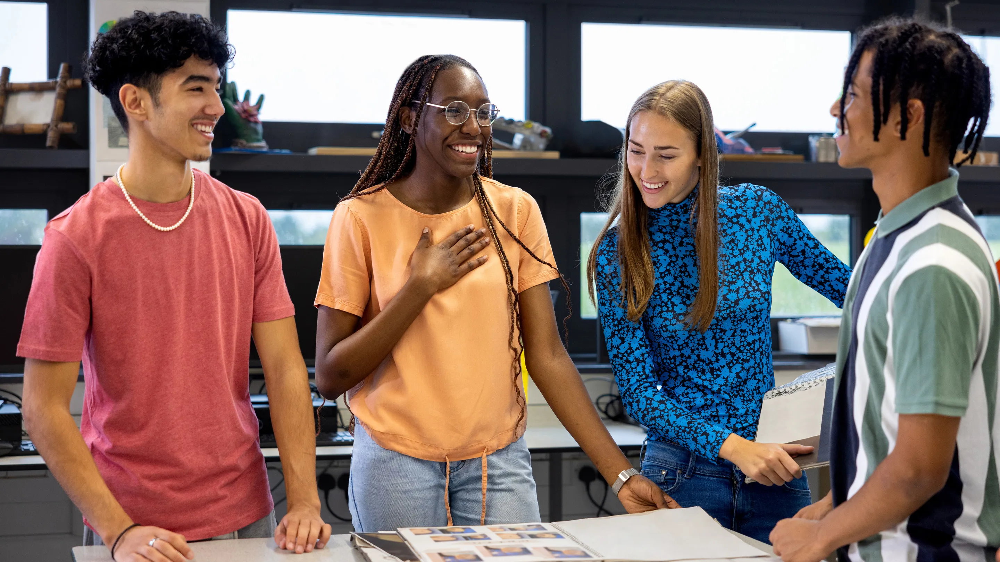

Resources for New Student Leaders
This website turns survey feedback from current student leaders into practical support for incoming e-board members. Each section focuses on a challenge that showed up in the survey and gives strategies, tools, and resources to help student leaders succeed.
Section 1 focuses on one of the biggest issues reported in the survey: time management and balancing responsibilities.

Managing Your Time as a Student Leader
Many student leaders reported that balancing academics, leadership responsibilities, and other commitments can be difficult. This section gives simple ways to stay organized, prioritize tasks, and avoid feeling overwhelmed.
Practical Time Management Tips
- Use one calendar for everything. Keep classes, meetings, deadlines, and events in one place.
- Prioritize tasks daily. Start each day by identifying the most important tasks first.
- Break large projects into smaller steps. This makes events and deadlines feel more manageable.
- Set reminders early. Give yourself notice before meetings, forms, and event deadlines.
- Plan ahead for busy weeks. Midterms, finals, and major campus events can stack up quickly.
- Do not try to do everything alone. Delegate responsibilities to other board members when possible.
Helpful Planning Tools
List your responsibilities
Write down class deadlines, club tasks, meetings, work shifts, and personal responsibilities in one system.
Choose your top priorities
Decide what must be done now, what can wait, and what can be shared with other members.
Review each week
Check what is coming up, adjust your schedule, and prepare early for busy periods.
Communication & Teamwork
Student leaders in the survey pointed to communication problems, unclear expectations, and difficulty coordinating with other board members. Strong teamwork starts with clear roles, regular check-ins, and honest communication.
Ways to Strengthen Communication
- Set expectations early. Make sure every board member knows their role and responsibilities.
- Hold regular check-ins. Weekly or biweekly meetings keep everyone updated.
- Use one main communication platform. Avoid losing information across too many apps.
- Share updates clearly. Summarize deadlines, tasks, and decisions after meetings.
- Ask questions early. It is better to clarify a task than make the wrong assumption.
- Build trust within the team. Respect and accountability make collaboration smoother.
Helpful Communication Tools
Define roles
Give each officer specific responsibilities so tasks do not overlap or get ignored.
Meet consistently
Use short, regular meetings to review progress, solve problems, and prepare for upcoming events.
Document decisions
Keep notes on deadlines, assignments, and next steps so everyone leaves with the same understanding.
How to Increase Member Engagement
Another challenge highlighted in the survey was low member participation. Even strong organizations can struggle if members do not attend meetings, respond to announcements, or stay involved throughout the semester.
Ways to Boost Participation
- Make meetings interactive. Include discussion, activities, or collaboration instead of only announcements.
- Promote events consistently. Use flyers, email, and social media to remind members what is happening.
- Create a welcoming environment. New members are more likely to return when they feel included.
- Offer incentives. Food, networking, giveaways, or certificates can encourage turnout.
- Partner with other clubs. Collaborative events can bring in new audiences.
- Ask members what they want. Feedback helps leaders plan events that students will actually attend.
Helpful Engagement Resources
Promote early
Start advertising before the event and continue with reminders as the date gets closer.
Make it worth attending
Plan events that are useful, social, or memorable so members feel their time is valued.
Follow up afterward
Share photos, thank attendees, and ask for feedback to keep people connected after the event ends.
How to Plan a Successful Event
Event planning was another challenge mentioned in the survey. Organizing a successful event takes clear goals, early preparation, teamwork, and strong promotion. This section breaks the process into simple steps that new leaders can follow.
Event Planning Tips
- Start with a clear goal. Decide whether the event is social, educational, professional, or community-based.
- Plan early. Give yourself enough time to reserve space, request funding, and promote the event.
- Assign roles. Split responsibilities such as promotion, budgeting, setup, and communication.
- Track deadlines. Keep all approval dates, forms, and preparation tasks in one place.
- Promote more than once. Students may need several reminders before they decide to attend.
- Evaluate afterward. Reflect on what worked well and what should be improved next time.
Helpful Event Resources
Set the goal
Define the purpose of the event and what outcome your organization wants to achieve.
Organize the details
Confirm the location, budget, responsibilities, and promotional plan before the event week.
Review the results
After the event, gather feedback and note improvements for the next program.
Skills You Will Gain as a Student Leader
The survey did not only highlight challenges. It also showed that student leaders gain valuable skills through their roles. These experiences help students grow personally, academically, and professionally.
Common Skills Leaders Develop
- Communication. Speaking clearly, writing updates, and leading discussions.
- Teamwork. Collaborating with other officers and working toward shared goals.
- Organization. Managing deadlines, documents, and multiple responsibilities.
- Problem-solving. Responding to unexpected issues during planning and events.
- Time management. Balancing leadership with academics, work, and personal life.
- Confidence. Taking initiative and making decisions in front of others.
Professional Growth Resources
Recognize your growth
Pay attention to how leadership responsibilities help you improve over time.
Keep examples
Save examples of events, teamwork, and projects you can later use in interviews and resumes.
Apply the skills elsewhere
Use what you learn in leadership roles in class projects, internships, and future jobs.
Advice from Current Student Leaders
One of the most valuable parts of the survey was the advice shared by current e-board members. Their experiences can help incoming leaders prepare for challenges and approach their roles with a stronger mindset.
Key Advice Themes
- Leadership is a responsibility, not just a title. Take your role seriously and stay committed.
- Communicate clearly. Set expectations early and keep your team informed.
- Manage your time wisely. Do not let tasks pile up.
- Trust your team. Delegating helps the organization function better.
- Stay open to learning. You will improve through experience, mistakes, and feedback.
- Be consistent. Strong leadership often comes from small habits done regularly.
Leadership Inspiration & Support
Take initiative
Do not wait for every answer. Good leaders often learn by stepping forward and trying.
Stay accountable
Follow through on commitments and be someone your team can rely on.
Learn from experience
Every event, mistake, and success gives you information that can make you a stronger leader.
Well-Being and Avoiding Burnout
Balancing leadership, academics, work, and personal responsibilities can be stressful. This section focuses on maintaining well-being so student leaders can stay effective without becoming overwhelmed.
Ways to Protect Your Well-Being
- Do not overcommit. Be realistic about what you can handle each semester.
- Set boundaries. Protect time for studying, rest, and personal responsibilities.
- Ask for help when needed. Leadership should be shared, not carried alone.
- Take breaks. Rest improves focus, energy, and decision-making.
- Recognize stress early. Pay attention to signs of exhaustion or falling behind.
- Focus on balance. Success in leadership should not come at the expense of your health.
Helpful Wellness Resources
Know your limits
Be honest about your workload and avoid saying yes to every responsibility.
Make space for rest
Protect time for sleep, breaks, and activities that help you recharge.
Reach out early
Talk to teammates, advisors, or campus resources before stress becomes unmanageable.